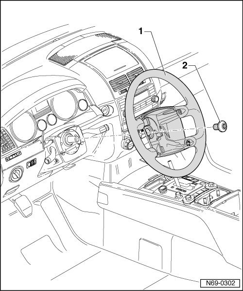

Steering Wheel
Steering Wheel
Removing
- Remove driver airbag unit --> [ Driver Airbag ] Driver Airbag
- Turn steering wheel - 1 - to center position (wheels point straight ahead).
- Remove bolt - 2 - and pull steering wheel off of steering column.

Installing
- Place steering wheel onto steering column.
- The center markings on the steering wheel and steering column must align.
- The coil spring connector socket and pin must be positioned in the openings provided at the base of the steering wheel.
- Fasten steering wheel with bolt - 2 -; torque is 50 Nm.
- Mark the bolt with a center punch.
- Bolt can be used five times.